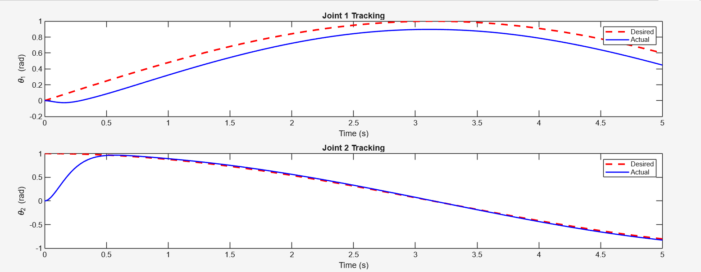
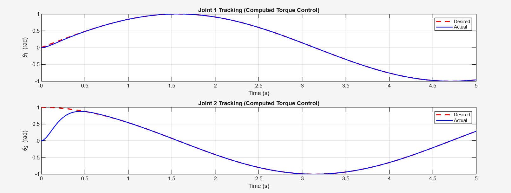

Project 002
A comparative study of model-free (PID) vs model-based (Computed Torque Control) approaches for trajectory tracking of a 2R planar robotic manipulator, simulated in MATLAB.


This project investigates the trajectory tracking performance of a 2R (two-revolute joint) planar manipulator under two fundamentally different control philosophies: Proportional-Integral-Derivative (PID) control and Computed Torque Control (CTC).
The complete dynamic model was derived from first principles using Lagrangian mechanics, yielding the standard manipulator form with inertia matrix M(q), Coriolis/centrifugal matrix C(q,q̇), and gravity vector G(q). Simulations were run in MATLAB using the ODE45 solver to track sinusoidal reference trajectories over a 10-second window.
A reactive, model-free controller that uses only position error feedback — no knowledge of system dynamics is required. Gains were tuned iteratively: Kp = diag(500, 300), Kd = diag(50, 30), Ki = diag(10, 5).
Uses feedback linearization to explicitly cancel the nonlinear dynamics of the manipulator, reducing the system to a simple linear second-order form. Gains designed for ωn = 10 rad/s and ζ = 0.8: Kp = diag(100, 100), Kd = diag(16, 16).
CTC achieved approximately 97% reduction in tracking error compared to PID, with significantly faster settling and near-zero steady-state error.
| Metric | PID — Joint 1 | PID — Joint 2 | CTC — Joint 1 | CTC — Joint 2 |
|---|---|---|---|---|
| RMSE (rad) | 0.0523 | 0.0687 | 0.0012 | 0.0015 |
| Max Error (rad) | 0.1245 | 0.1532 | 0.0034 | 0.0041 |
| Steady-State Error (rad) | 0.0234 | 0.0312 | 0.0001 | 0.0002 |
| Settling Time (s) | 1.23 | 1.45 | 0.15 | 0.18 |
| Control Effort (N·m·s) | 145.6 | 98.3 | 152.3 | 102.1 |
The main challenge with PID was that it could not compensate for configuration-dependent dynamics — the inertia, Coriolis forces, and gravity all change with the manipulator's pose, causing persistent phase lag and tracking error.
For CTC, the key insight was that its performance is highly sensitive to model accuracy. Perfect cancellation of nonlinearities is only achievable when the model exactly matches the real system. In practice, model uncertainties would degrade CTC performance, suggesting the need for robust or adaptive variants for real-world deployment.
PID, while less accurate, proved more robust to such uncertainties — making the trade-off between performance and robustness a central finding of this study.